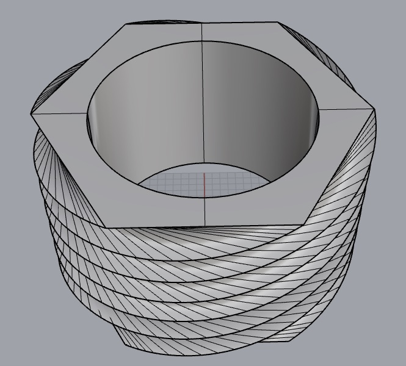

Day 1 (19th October 2015)
I was so excited when i reached Fablab Kochi and met Mr Luciano, our trainer. We were only 6 persons on the first day.After doing some necessary arrangments like arranging tables and chairs, setting up the projector and screen , we introduced ourselves and shared our backgrounds and experiences. I told i am engineering gradute with electronics background, and i am trying to set up a makerspace in our city with my friend (Sibu, who is also attending the prefab academy).We were given a form (using google gorms) to be filed up where we are asked about our Name,contact details and our backgrounds. The form was e-mailed to our email ids.I filled up it when i reached my room after the class
Day 2 (20th October 2015)
-Introduction to Fab lab, Fab academy and Linux-
On the second day of the pre fab academy Mr Luciano gave an introduction about Fablab and fab academy. He told about Fab academy which happens every year from january to july with the online classes by Prof Neil. We will have online class once in a week and some assignments will be given which is to be done within one weeek
The Ubuntu
We were asked to install ubuntu in our laptop/pc. Since i am a linux lover and i love it more than any other OS, it was already installed in my laptop. Luciano downloaded Ubntu 14.04 and made it bootable in pendrive so that people can install it
Mercurial
He explained about the Mercurial , a cross platform, distributed revision control tool for software devolopers. He created a page in 'slack.com' with domain 'keralaacademy.slack.com' and posted the steps to setup mercurial. The keys were also posted there.
We were asked to document every thing we learn and do in the course.For that we have to make a website where all the documentation is to be done . Luciano told us he will give the space for the site to be hosted on the next day
Day 3 (21st October 2015)
Although the ubuntu were downloaded the previos day, it was not installed in many computers. The first session of the day was installing linux , updating it etc. Some need virtual machine for installing linux. Since some faced some problem with virtual machine, it took some time to get the linux installed in all computers. Since it was already insstalled in my PC , i gave the commands to update and upgrade in the terminalThe CAD
The next session was about CAD- Computer Aided Designs. There are a lot of CAD softwares like Solidworks, Rhinoceros, SketchUp etc . Here we choose Rhino since luciano is an expert in it. We were given the setup file of Rhino and asked to install it. For linux , 'Blender' is suggested as a CAD software. Although i am linux user i switched to windows because Rhino is much user friendly than blender and Luciano knows Rhino much better than Blender. We installed the Rhino and litsened to Luciano for learning the basics in Rhino
Day 4 (22nd October 2015)
-The Rhino day-Since the rhino was installed on the previos day it was redy to use toady. Luciano taught all the basic tools and methods to use Rhino. We learnt most of the basic tools in rhino and the command option to choose the tool is pretty good. It helps us to do works much faster. I am not going to mention all the tools here because it is impossible to document all the tools in a CAD software like Rhino. One thing i should say is the speed and skill of Luciano in Rhino is AWESOME. What i came to know from he is , there are a lot of tricks in Rhino that we should follow
At the end of the day we were given an assignment in Rhino. Luciano posted the screenshot of a model he created in slack and asked us to design the same.The design was something nice and of course some what tricky. I started working on it from that moment itself. Many attempts were falied at the begining but finally i made it.
The assignment

My work

Day 5 (23rd October 2015)
There were a surprise today. Luciano came with his friend Mr Fransisco who is the trainer at Fablab Trivandrum. So we had two trainers today. Fransisco introduced a new CAD software called Antimony which is an opensource project launched by Matt Keeter. In Rhino , once you designed something , you can't edit it or change its dimensions or size. But in antimony , you can! Antimony takes a different approach and relies on graph composition where nodes represent 2D/3D shapes and primitives, boolean and math operations, various transformations etc. For installing Antimony we took the source code from github. There were many dependencies needed for it like python 3. So all the requirments are to be installed first.
Luciano gave another assignmnet today which is bit tough compared to the first one. But it seemed to be interesting
Assignment_2
My work